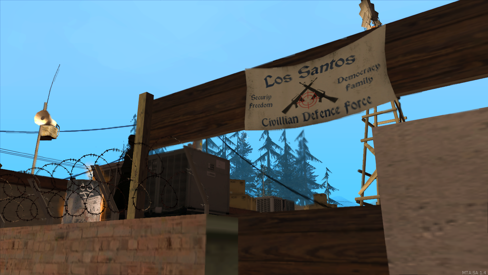
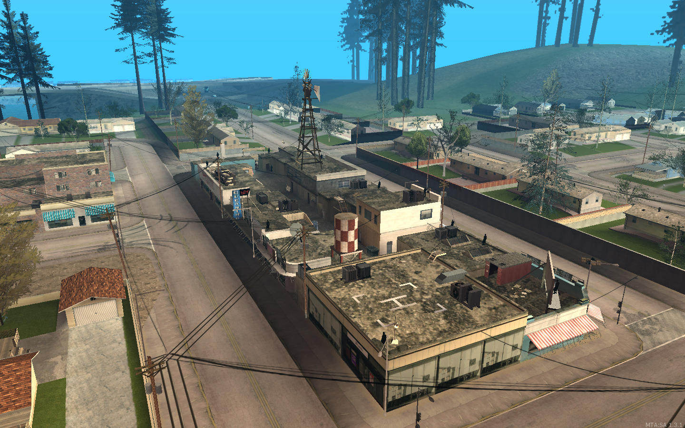
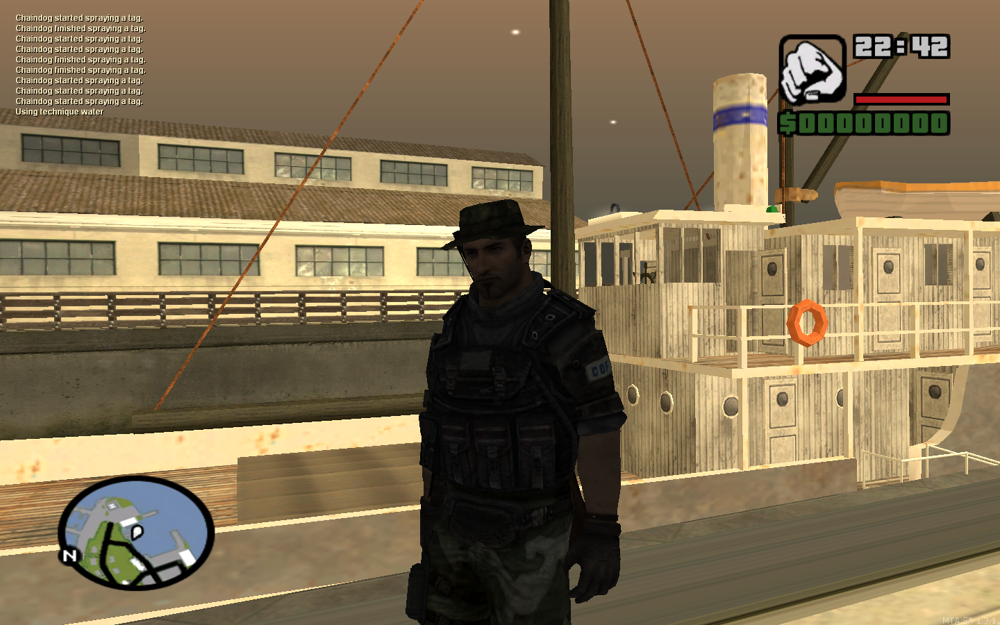

Cộng Hòa Palomino Creek
Mặc dù tên trên các biểu ngữ của họ, nhưng họ không còn ở Los Santos nữa mà ở các thị trấn nhỏ và trại khác nhau nằm rải rác ở các vùng Flint County, Red County và Whetstone. Họ đã chuẩn bị và quyết tâm sống sót, nhưng cũng đang cố gắng làm điều này đúng cách. Họ thể hiện những tiêu chuẩn đạo đức cao nhất còn lại, họ không giết người mà không có lý do và liên quan đến thương mại và công việc để thực dân hóa và bình định nhà nước. Họ đã thành lập "Cộng hòa Palomino Creek" trước tiên và đang nỗ lực mở rộng nó bằng cách kiểm soát các vùng lãnh thổ lân cận.
Cộng hòa Palomino Creek là một Cộng hòa nằm ở phía đông San Andreas, chiếm thị trấn Palomino Creek, được cai trị và có người ở của Lực lượng Civilian Defence Force. CDF đã tuyên bố có thẩm quyền đối với Establishment trong khu vực mặc dù người cuối cùng vẫn chưa công nhận nó là một khu vực tách biệt với nhà nước của họ, là nguồn xung đột chính giữa hai lực lượng. 
Mặc dù không chống đối trực tiếp với The Establishment, nhưng họ không muốn chính quyền của mình bị xâm phạm hoặc trong hoạt động kinh doanh của mình, điều này đôi khi dẫn đến xung đột vũ trang. Họ được biết là có liên kết với Wastelanders và Syndicate khi lợi ích chung chỉ ra điều đó và là kẻ thù truyền kiếp của bọn cướp, những kẻ mà chúng chủ động chiến đấu để kiểm soát khu vực Red County.
Gia nhập Civilian Defence Force
Để tham gia CDF, bạn cần đến một trong những căn cứ của họ ở Downtown Los Santos, nơi bạn có thể, sau khi nói chuyện với 'CDF Recruiter', hãy tham gia Lực lượng Civilian Defence Force.
Lãnh đạo Civilian Defence Force
CDF bầu ra người lãnh đạo bằng cách bỏ phiếu - bỏ phiếu trong trò chơi, nhưng kéo dài hơn 24 giờ thực tế, để cho tất cả người chơi thường xuyên có cơ hội và bỏ phiếu. Để thêm ứng cử viên của bạn, bạn phải hoàn thành một câu hỏi ngắn trong trò chơi về kế hoạch của bạn cho nhiệm vụ. ((hiện không được thực hiện trong trò chơi))
Nhiệm vụ
Các nhiệm vụ của CDF thường sẽ liên quan đến, trong các nhiệm vụ đầu tiên, thu thập lương thực và các nhu yếu phẩm khác cho các tiền đồn và gìn giữ hòa bình trong đó. Khi bạn tiến bộ trong hàng ngũ, bạn sẽ có thể tiếp quản các trại đối thủ và tham gia vào các cuộc xung đột vũ trang giữa các nhóm đối thủ. ((Nhiệm vụ chưa được hoàn thiện lúc này))